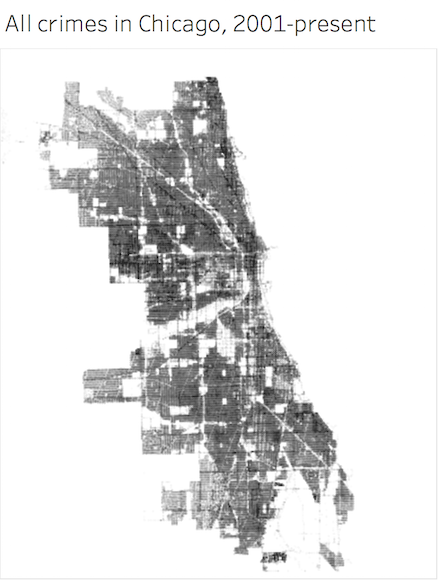
Note: before plotting, the data was slightly cleaned up to get rid of
some extranneous coordinates outside of the city limits.
An easy answer to our first question is quite simple:
crimes occur everywhere. Plotting the coordinates of every reported
crime since 2001 provides a clear approximation of a map of the city of
Chicago. A quick check of an actual map shows that the blank spots
largely consist of airport tarmacs, bodies of water, and interstates.
Before delving more deeply into the "where" of crime in Chicago,
let's look at a breakdown of the different types of crime that have
occurred.
Assignment 2: Exploratory Data Analysis
Connor Sawaske — sawaske@uw.edu
Dataset: Chicago Crimes, 2001-Present
This dataset contains statistics from the ~6.5 millions reported crimes committed in the city of Chicago from January 1, 2001-April 5, 2018. The type of crime committed, date and time, precise location, case and beat numbers, and arrest status are among the statistics included. This information is provided by CLEAR (the Chicago Police Department's Citizen Law Enforcement Analysis and Reporting system).
The data is available online at: Chicago Access Page
Initial Analysis Questions
- Where do crimes occur?
- What types of crimes are most prevalent?
- When do crimes occur?
- How has the distribution of crimes changed over time?
Discoveries & Insights
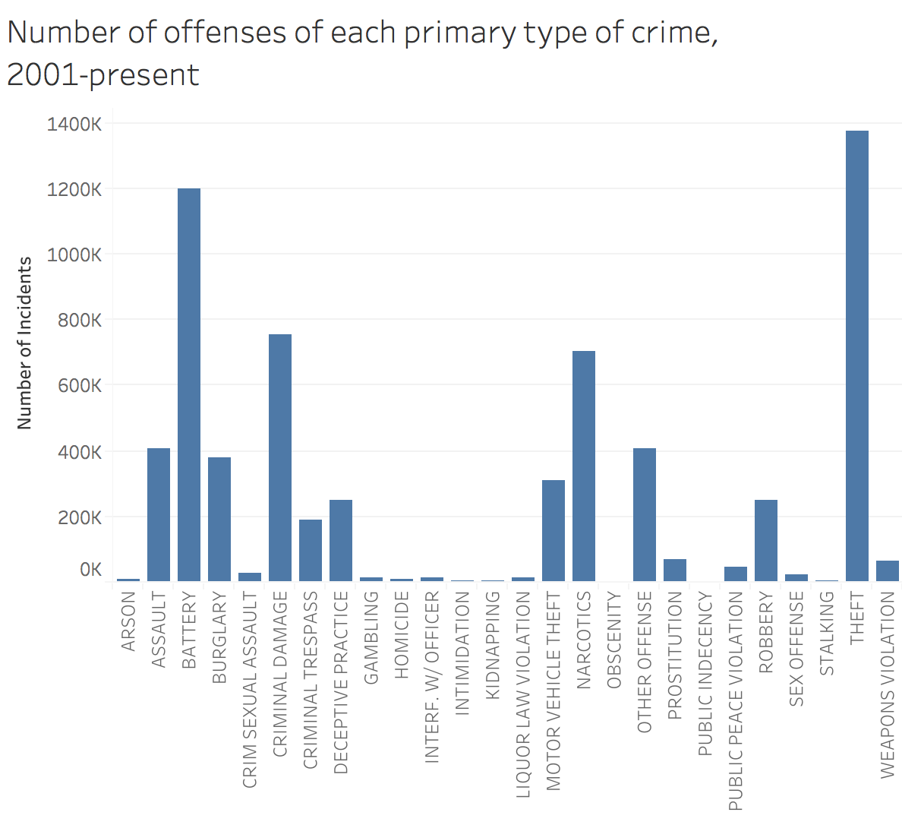
The standouts here are theft, battery, criminal damage, and narcotics. Our guess would be that many of the criminal damage incidents occur in tandem with others. For this reason, for the remainder of the analysis the crimes will be grouped into four sets:
Violent crimes other than homicide (assault, battery, and robbery)
Narcotics
Theft and burglary
Homicide
Now, let's go back to our previous map and break it down by the type of offense.
The standouts here are theft, battery, criminal damage, and narcotics. Our guess would be that many of the criminal damage incidents occur in tandem with others. For this reason, for the remainder of the analysis the crimes will be grouped into four sets:
Violent crimes other than homicide (assault, battery, and robbery)
Narcotics
Theft and burglary
Homicide
Now, let's go back to our previous map and break it down by the type of offense.
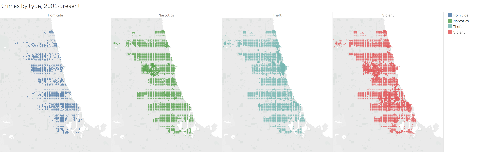
This gives quite a powerful insight into the different types of crime that occur in different parts of Chicago. In particular, by comparing the maps we can see some geographic correlation between different types of crime. For instance, it appears that everywhere where there is a strong prevalence of violent crime, homicides are more common there than in other places. Incidents involving narcotics tend to only occur in areas with a high volume of violence, but the converse is not necessarily true. Theft and narcotics do not appear to have much correlation.
Notice the diagonal swath of land on the north-eastern side of the city (most clearly seen by the absence of homicides). From this series of maps, it appears to be one of the areas with the lowest incidence of crime, aside from some theft near the lake. What is special about this area?
This gives quite a powerful insight into the different types of crime that occur in different parts of Chicago. In particular, by comparing the maps we can see some geographic correlation between different types of crime. For instance, it appears that everywhere where there is a strong prevalence of violent crime, homicides are more common there than in other places. Incidents involving narcotics tend to only occur in areas with a high volume of violence, but the converse is not necessarily true. Theft and narcotics do not appear to have much correlation.
Notice the diagonal swath of land on the north-eastern side of the city (most clearly seen by the absence of homicides). From this series of maps, it appears to be one of the areas with the lowest incidence of crime, aside from some theft near the lake. What is special about this area?
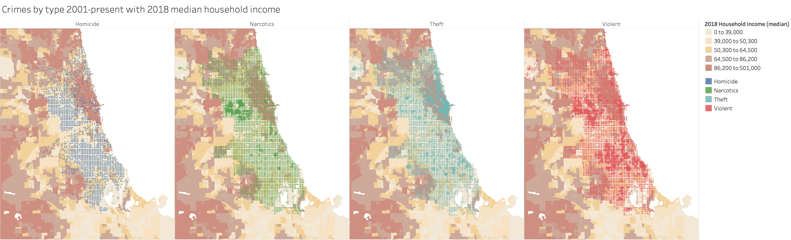
By and large, this area most devoid of homicides and violent crime over the past 17 years is correlated extremely highly with median household income. Perhaps unsurprisingly, there is a relatively large volume of theft in this area.
Now let's move on to our second question: when do
crimes occur?
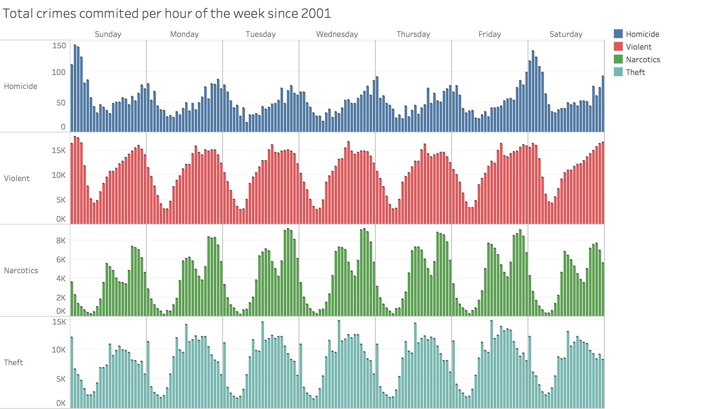
Here are periodic weekly cycles for each type of crime. Notice that most types of crime have a roughly equivalent period in each day. For narcotics offenses, there is a peak around noon and a larger/steeper peak closer to midnight. In constract, violent offenses build from the early morning throughout the day in more or less one single peak until tapering off near midnight (with the exception of Saturday nights). Thefts largely occur at noon more than any other time. The outlier to daily periodicity within the weak being roughly constant is in homicides; most frequently, they occur specifically after midnight on Friday and Saturday nights.
Next, we turn to how crime has changed over time,
our fourth question. From here onward, we will ommitt offenses from
2018 so as not to skew results. To begin, consider the following bar
chart.
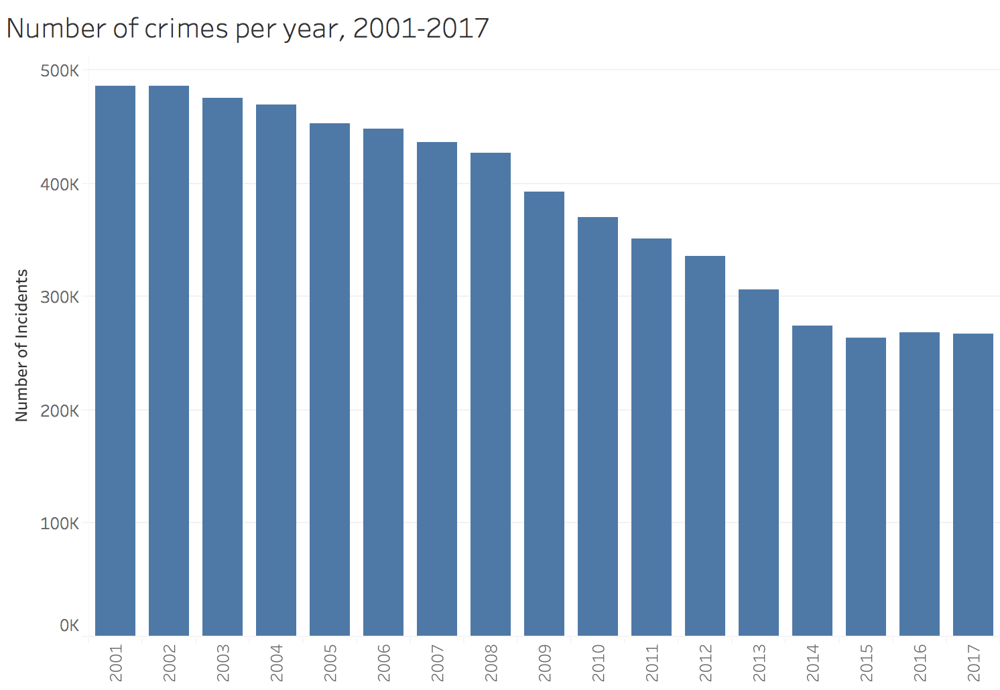
It is clear that crime has seen a considerable
decrease since 2001. Let's break this down by the type of offense once
more, first looking at homicides.
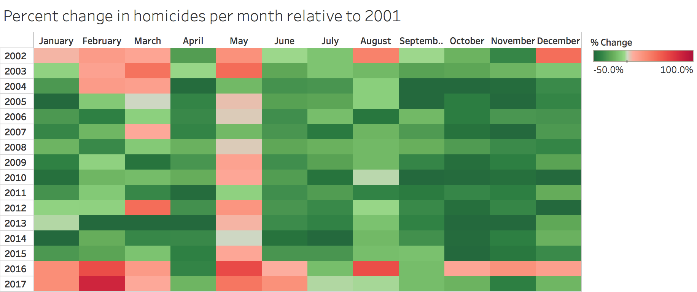
Although the past few winters are concerning and May of 2001 might have had an unusually low number of homicides, we see here that year-over-year there has been a large, steady reduction in the number of homicides reported.
Since homicides happen relatively rarely, a
month-by-month basis appeared to be most appropriate for the above
graphic. For narcotics and violent crimes, their large numbers lend
themselves to a day-by-day analysis.
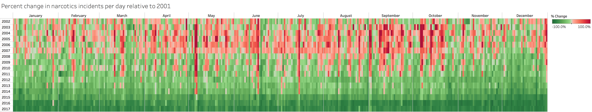The comparison to the previous
graphic is somewhat staggering. Although there has been a large
decrease over the last 17 years in narcotics offenses, there was a
massive uptick in the mid-2000's. Curiously, there seems to be a larger
swing to this trend occuring in late summer/early fall.
Next, let's look at violent offenses.
Next, let's look at violent offenses.
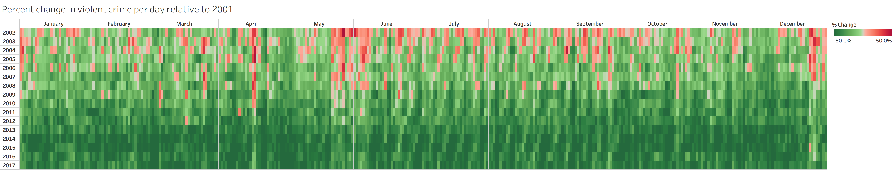
The same trend is apparent here, though not to such
a large degree and for a considerably shortly duration. By and large,
violent offenses showed a mild increase and then a steady decrease over
the last 17 years.
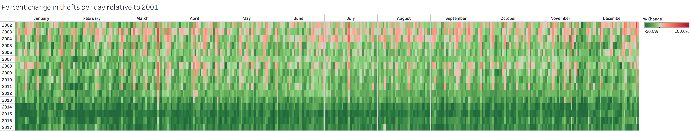In the case of thefts, we have here the same
pattern to an even milder degree. Aside from 2003 and 2004, Chicago has
seen a steady decrease in this type of crime since 2001.
Now we'll tie these changes over time back together with our initial plot. Back in the last bar graph, it appears from the inlflections points in the inferred slope that we may want to consider three five-year periods: 2001-2005, 2006-2010, and 2011-2015. We'll start by looking at how the latter two periods changed compared to the one before them.
Now we'll tie these changes over time back together with our initial plot. Back in the last bar graph, it appears from the inlflections points in the inferred slope that we may want to consider three five-year periods: 2001-2005, 2006-2010, and 2011-2015. We'll start by looking at how the latter two periods changed compared to the one before them.
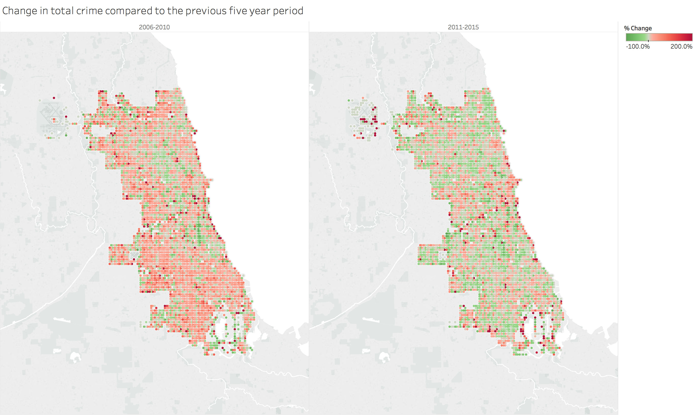It appears that for many parts
of Chicago, when considering whole half-decades at a time, many areas
actually saw a large increase in total crime in the latter
half of the 2000's, but have more recently seen improvements.
Finally, we'll tie our main two approaches together by bringing the type of offense into the picture.
Finally, we'll tie our main two approaches together by bringing the type of offense into the picture.
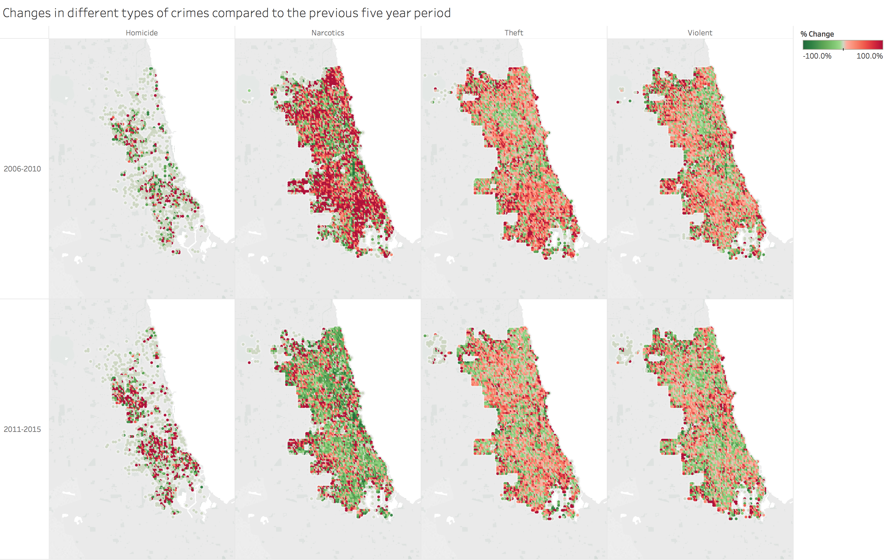
As suggested independently by our previous analyses,
narcotics crimes truly dominated in terms of growth in the early
2000's. Luckily, that sector has also made the largest reduction in the
time since. Unforunately, the homicides of the last few winters
mentioned above also appear to have left their quite a mark.
Summary
How has Chicago fared for the past 17 years? We see the suggestion of either a drug epidemic or a pronounced crack down on drug use roughly 15 years ago, but there has been a large decrease in overall offenses. The expected trend of some neighborhoods being more associated with crime is very prevalent here (especially in the case of violent crimes).Finally, if you are in Chicago and want to avoid crime as much as possible, conduct the majority of your business around 4am.